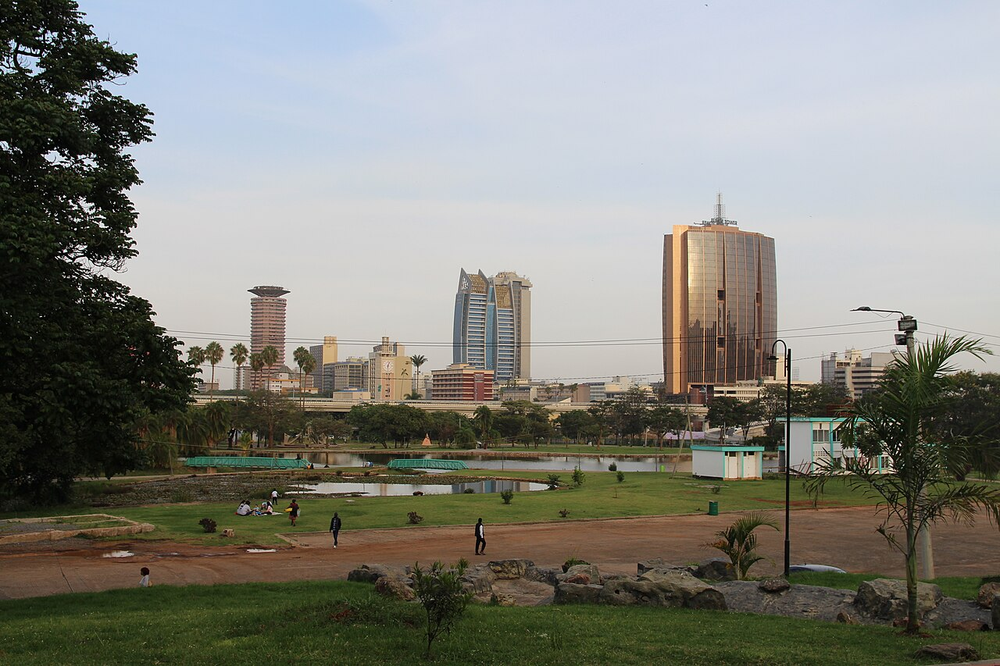
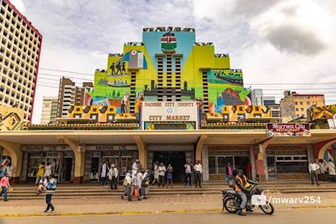
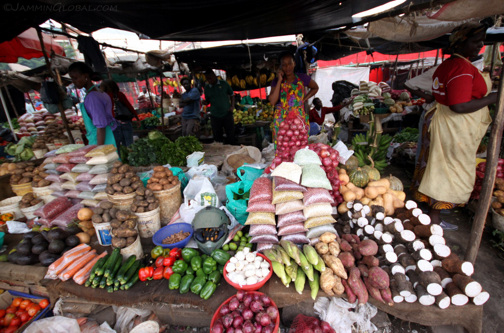
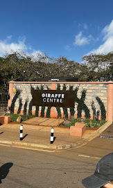

Nairobi City
Discover the vibrant capital city of Kenya.

KICC & City Centre
See one of Nairobi's most recognised landmarks and explore the heart of the city.

Uhuru Park
A historic green space in the heart of Nairobi.

Nairobi National Museum
Explore Kenya's history, culture, art and heritage.

Nairobi City Market
Experience one of Nairobi's well-known city markets.

Nairobi City Walks
Discover Nairobi's streets, landmarks and everyday city atmosphere on foot.

History & Culture Walk
Discover the stories, heritage and cultural character of Nairobi.

Food & Local Life
Experience Nairobi through food, markets and everyday local life.

Nairobi National Park
Experience wildlife in a national park just outside Nairobi city.

Giraffe Centre
Enjoy a memorable giraffe experience in Nairobi.

Tour Land Cruiser
A capable touring vehicle for safari and wildlife experiences.

Tour Van
Spacious transport for city tours, excursions and group travel.

SUV / Prado TX
Comfortable private transport for touring and travel around Kenya.

Private Sedan
Comfortable transport for city travel, transfers and private journeys.

JKIA Airport Transfers
Reliable airport pickup and drop-off between JKIA and your destination.

Hotel Transfers
Convenient transportation between Nairobi hotels, the airport and other destinations.

Private Transfers
Comfortable and convenient private transportation around Nairobi.